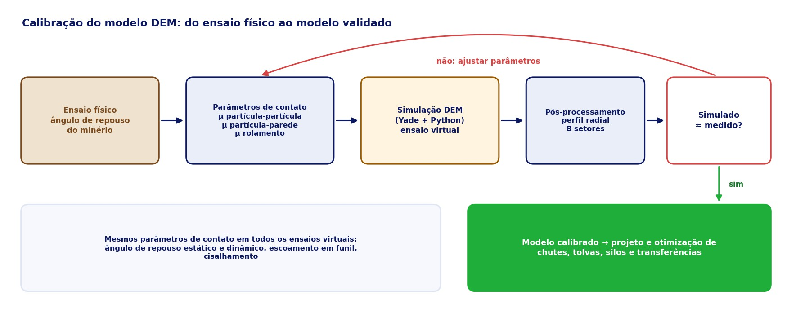
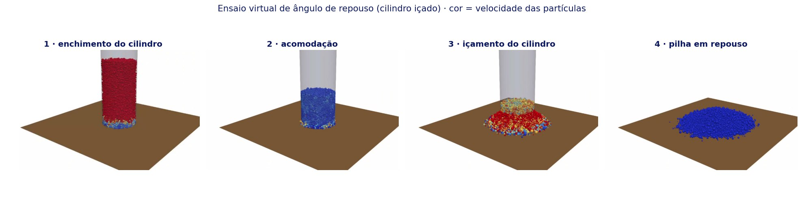
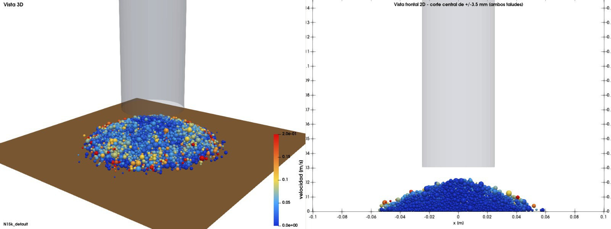
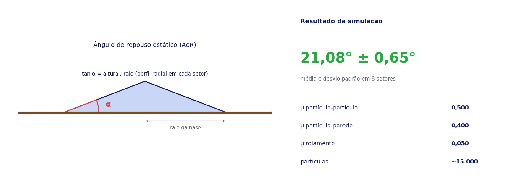

Problema / desafio do cliente
Chutes, tolvas, silos e pontos de transferência de minério de ferro sofrem com entupimentos, desgaste e derramamentos. Para projetar e otimizar esses equipamentos por simulação, o modelo precisa reproduzir o comportamento real do material, e isso depende dos parâmetros de contato entre partículas, que não podem ser medidos diretamente.
O objetivo foi calibrar um modelo pelo Método dos Elementos Discretos (DEM) para o minério de uma grande mineradora de ferro no Brasil, usando o ângulo de repouso como ensaio de referência.
Contexto e características do processo
- Cliente: uma das principais mineradoras de minério de ferro do Brasil.
- O DEM simula cada partícula individualmente e calcula as forças de contato entre elas, o que permite estudar escoamento, acúmulo e obstruções de materiais granulares.
- O ângulo de repouso (inclinação que a pilha atinge em equilíbrio) é um dos ensaios mais usados para caracterizar o material e calibrar os parâmetros do modelo.
Diagnóstico e dados analisados
- Os parâmetros de atrito (partícula-partícula, partícula-parede e de rolamento) controlam o ângulo de repouso, o escoamento e a formação de arcos em tolvas e chutes.
- Sem calibração, a simulação pode prever um escoamento muito diferente do real e levar a decisões de projeto erradas.
- Ensaios em escala industrial são caros e demorados; a simulação calibrada permite testar muitas condições a baixo custo.
Metodologia utilizada
- Ensaio virtual de ângulo de repouso com cilindro içado: o cilindro é preenchido com cerca de 15.000 partículas, que se acomodam; o cilindro é içado e a pilha se forma até o repouso.
- Pós-processamento do perfil radial da pilha em 8 setores, com cálculo do ângulo em cada setor, média e desvio padrão.
- Comparação com o ângulo medido no ensaio físico do minério.
- Ajuste iterativo dos parâmetros de contato até o resultado simulado reproduzir o medido.
- Uso do modelo calibrado nas simulações de equipamentos de manuseio.

Solução de engenharia desenvolvida
A simulação foi implementada em Yade, software livre de DEM controlado por Python, o que permitiu automatizar os ensaios, variar os parâmetros em lote e extrair os resultados sem intervenção manual.


Tecnologias e processos envolvidos
- Método dos Elementos Discretos (DEM).
- Yade (código aberto) com scripts em Python.
- ParaView para visualização 3D e cortes.
- Pós-processamento em Python: perfil radial por setores e estatística do ângulo.
Modelagem, simulação e ferramentas computacionais
Com atrito partícula-partícula de 0,500, partícula-parede de 0,400 e de rolamento de 0,050, o ensaio virtual resultou em um ângulo de repouso estático de 21,08° ± 0,65°, calculado nos 8 setores da pilha.

O baixo desvio entre setores mostra uma pilha simétrica e um resultado estável, adequado para comparar com o ensaio físico e ajustar os parâmetros.
Resultados obtidos
- Ensaio virtual automatizado de ângulo de repouso, reproduzível e rápido.
- Ângulo de repouso de 21,08° ± 0,65° para o conjunto de parâmetros avaliado.
- Relação direta entre os parâmetros de contato na escala da partícula e o comportamento global do material.
- Base calibrada para simular e otimizar chutes, tolvas, silos e transferências, reduzindo entupimentos, desgaste e derramamentos.
CAPEX/OPEX e análise técnico-econômica
Quando aplicável: estimativas de CAPEX e OPEX, comparação entre alternativas, custo por m³ ou por tonelada, payback.
Escopo e responsabilidades da GETA
A GETA foi responsável por:
- montagem do ensaio virtual em Yade e Python;
- definição da faixa de parâmetros de contato;
- pós-processamento e cálculo do ângulo de repouso;
- calibração do modelo com base no ensaio físico;
- recomendações para as simulações de equipamentos.
Principais entregáveis
- Scripts do ensaio virtual de ângulo de repouso.
- Rotina de pós-processamento do perfil radial.
- Parâmetros de contato calibrados para o minério.
- Relatório técnico com resultados e visualizações.